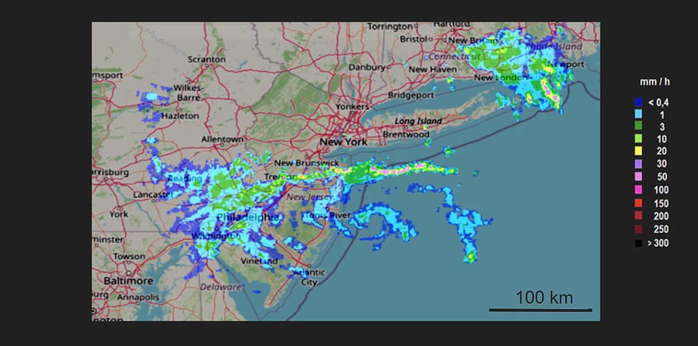

Few users of these images are aware of the discrepancy that exists with ground-based rain measurements (rain gauges).
However, the gap is often significant and radar's image correction is one of the most relevant meteorological areas to challenge.
Encyclopedia.pub (scientific content platform for researchers) :
Meteorological radar measurements are obviously linked to significant and sometimes even significant errors;
therefore, radar can be called a semi-quantitative measuring device (...) Radar errors are difficult to diagnose
and therefore difficult to eliminate completely (...) Weather radar measurements have enormous potential
in hydrological applications, even if they are not yet fully exploited.
https://encyclopedia.pub/entry/7058
What is the goal of RadarToRain ?
Offer a radar image as close as possible to reality thanks to innovative processing based on AI.

How to evaluate the quality of the image corrected with the RadarToRain process ?
To be convinced of the quality of the corrected images, it can be compared with ground measurements (rain gauges)
into our radarToRain.com web service.
This comparison method can also be implemented by our customers (on demand).
Can RadarToRain process also improve forecasting ?
As the entire image is corrected, reliable predictions will be obtained from knowledge of the speed.